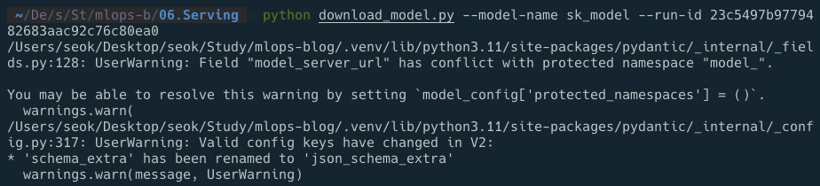
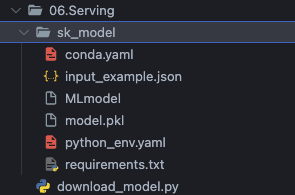
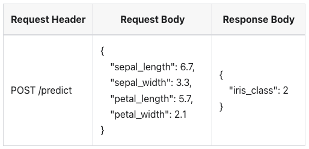
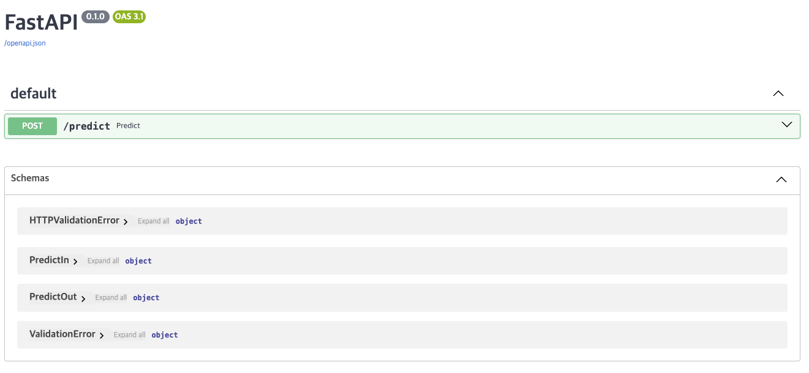
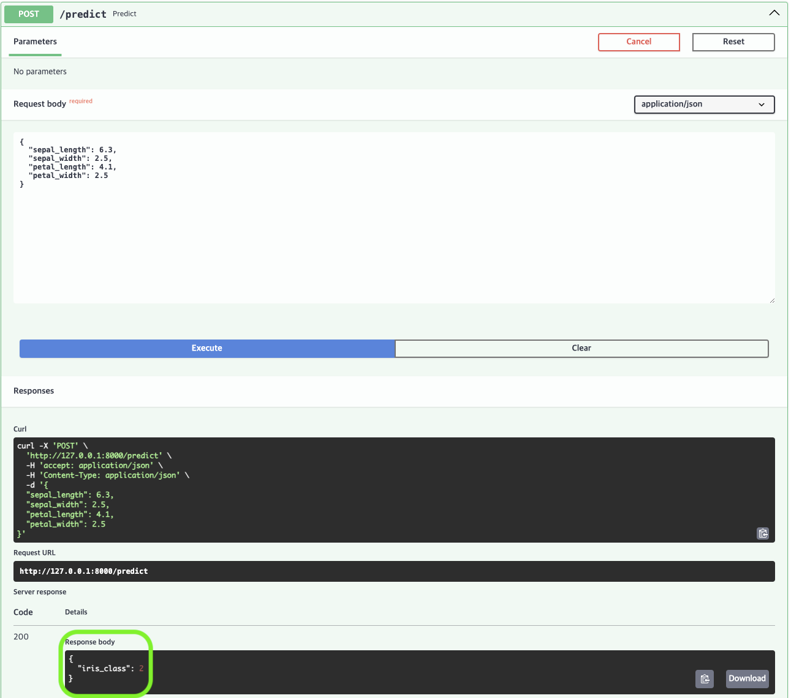

MLOps for MLE - 13
Summary
Iris 데이터를 입력받아 예측값을 반환하는 API 작성
제대로 동작하는지 확인
실습을 진행했던 코드를 보고싶으시다면 여기를 눌러주세요
실습
1. 모델 다운로드
1.1 Environment Variables
Model Registry 에 저장되어 있는 모델을 다운로드하기 위해 MLflow 서버와 MinIO 서버에 접속하기 위한 정보를 환경 변수로 설정
-> day 7 에서 작성한 코드와 같음
1.2 모델 다운로드 함수 작성
mlflow 패키지를 이용하여 model artifact 다운로드
-> model artifact 란 MLflow 에 모델이 저장될 때 함께 저장된 메타데이터와 모델 자체의 binary 파일을 의미
def download_model(args):
mlflow.artifacts.download_artifacts(artifact_uri=f"runs:/{args.run_id}/{args.model_name}", dst_path=".")1.3 모델 다운로드
argparse 를 이용하여 파라미터를 입력받을 수 있도록 하고 download_model() 함수를 호출함
1.4 전체 코드
import os
from argparse import ArgumentParser
import mlflow
# Set environments
os.environ["MLFLOW_S3_ENDPOINT_URL"] = "http://localhost:9000"
os.environ["MLFLOW_TRACKING_URI"] = "http://localhost:5001"
os.environ["AWS_ACCESS_KEY_ID"] = "minio"
os.environ["AWS_SECRET_ACCESS_KEY"] = "miniostorage"
def download_model(args):
# Download model artifacts
mlflow.artifacts.download_artifacts(artifact_uri=f"runs:/{args.run_id}/{args.model_name}", dst_path=".")
if __name__ == "__main__":
parser = ArgumentParser()
parser.add_argument("--model-name", dest="model_name", type=str, default="sk_model")
parser.add_argument("--run-id", dest="run_id", type=str)
args = parser.parse_args()
download_model(args)1.5 스크립트 실행
http://localhost:5001 에 접속하여 해당 모델이 저장된 experiment 에 들어가 run_id 와 model_name 을 확인
$ python download_model.py --model-name {model-name} --run-id {run-id}
이 스크립트를 실행하고 나면 model-name 의 폴더가 생성되는 것을 확인할 수 있음


sk_model 모델의 폴더 이름이 생겨남2. Model API 명세서 작성
POST /predict 를 수행했을 때 학습한 모델의 inference 결과를 반환해주는 API 명세서를 작성

3. Pydantic Model 로 스키마의 클래스 작성
명세서에 맞게 Class PredictIn(BaseModel) 와 Class PredictOut(BaseModel) 을 작성
from pydantic import BaseModel
class PredictIn(BaseModel):
sepal_length: float
sepal_width: float
petal_length: float
petal_width: float
class PredictOut(BaseModel):
iris_class: int4. Predict API 구현
4.1 Load Model
mlflow 패키지를 활용하여 모델을 불러옴
def get_model():
model = mlflow.sklearn.load_model(model_uri = "./{model-name}") # sk_model
return model
MODEL = get_model()4.2 Create a FastAPI Instance
app = FastAPI()4.3 Write predict function
API 에 POST /predict 를 수행했을 때 학습한 모델의 inference 결과를 반환할 수 있도록 predict 함수 작성
@app.post("/predict", response_model = PredictOut)
def predict(data: PredictIn) -> PredictOut:
df = pd.DataFrame([data.dict()])
pred = MODEL.predict(df).item()
return PredictOut(iris_class = pred)predict함수는PredictIn클래스의 데이터를 입력으로 받고PredictOut클래스를 반환- 입력받은 데이터를 데이터프레임 형태로 변환한 후, 위에서 불러온 모델을 이용하여 inference 결과를 저장
- 마지막으로 저장된 결과를
PredictOut클래스에 넣어 반환
POST method 를 이용하여 예측할 수 있도록 @app.post 를 이용한 데코레이터로 함수를 감싸주고, response_model 은 PredictOut 클래스로 지정
4.4 전체 코드
# app.py
import mlflow
import pandas as pd
from fastapi import FastAPI
from schemas import PredictIn, PredictOut
def get_model():
model = mlflow.sklearn.load_model(model_uri="./sk_model")
return model
MODEL = get_model()
# Create a FastAPI instance
app = FastAPI()
@app.post("/predict", response_model=PredictOut)
def predict(data: PredictIn) -> PredictOut:
df = pd.DataFrame([data.dict()])
pred = MODEL.predict(df).item()
return PredictOut(iris_class=pred)5. API 작동 확인
$ uvicorn app:app --reload 를 입력하고 http://localhost:8000/docs 로 이동하여 동작을 확인

